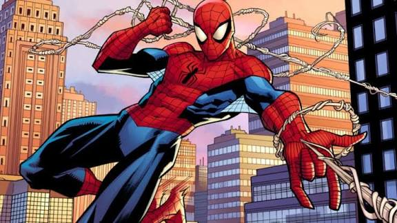

Como surgiu o homem-aranha
Homem-Aranha, o alter ego de Peter Parker, é um super-herói fictício das histórias em quadrinhos publicadas pela Marvel Comics. Criado pelo escritor/editor Stan Lee e pelo escritor/artista Steve Ditko, o Homem-Aranha surgiu em Amazing Fantasy #15 (agosto de 1962), durante a Era de Prata dos Quadrinhos. Lee e Ditko conceberam o personagem como um órfão educado por seus tios (May Parker e Ben Parker) em Nova Iorque que, enquanto adolescente, tem de lidar com as lutas diárias naturais dessa idade em adição às lutas extraordinárias como combatente do crime.

A vida antes dos poderes
Ben e May Parker em Nova York. Ele era um estudante inteligente, tímido e sofria bullying na escola.

A picada de aranha
Durante uma demonstração científica, Peter foi picado por uma aranha radioativa (ou geneticamente modificada em versões modernas).

Os superpoderes
Ele ganhou superforça, agilidade, a capacidade de grudar em paredes e o "sentido aranha" para prever perigos. Peter também inventou seus próprios lançadores de teia.
